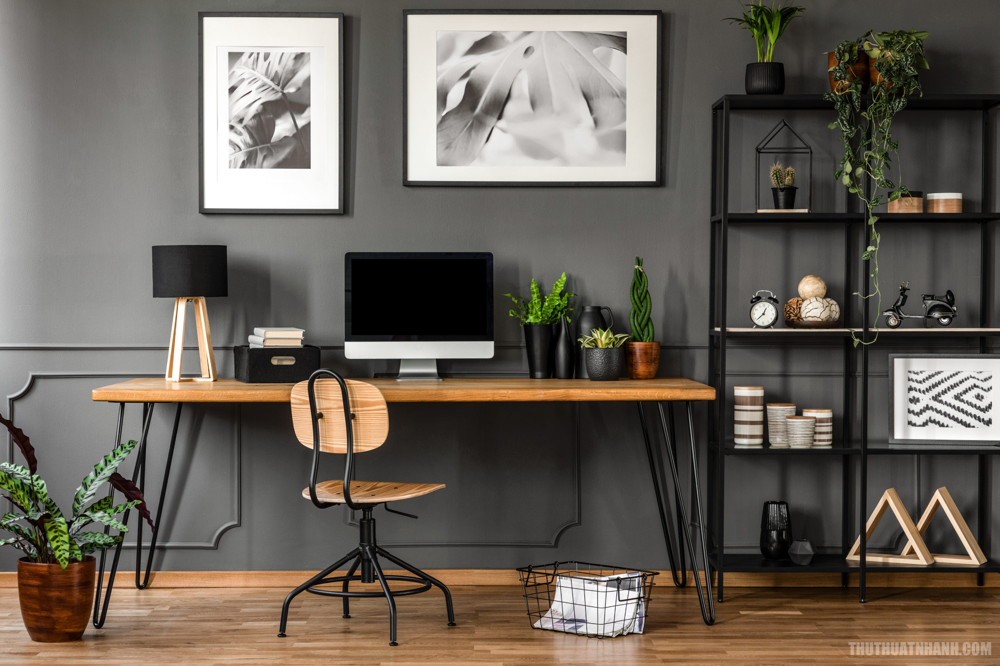

Nhiều CEO, nhà lãnh đạo và những người thành công trên thế giới đều có chung một bí quyết: bắt đầu ngày mới từ rất sớm. Khung giờ 5 giờ sáng mang lại những lợi ích bất ngờ mà bạn khó có thể tìm thấy ở bất kỳ thời điểm nào khác.
Không gian yên tĩnh tuyệt đối cho trí tuệ
Khi cả thế giới còn đang chìm trong giấc ngủ, bạn sẽ được tận hưởng một không gian tĩnh lặng, không có tiếng ồn ào của xe cộ hay sự làm phiền từ thông báo điện thoại. Đây là thời điểm "vàng" để não bộ đạt được trạng thái tập trung cao độ nhất.
"Làm chủ buổi sáng, làm chủ cuộc đời. Cách bạn sử dụng một giờ đầu tiên sau khi thức dậy sẽ thiết lập giai điệu và mức năng lượng cho toàn bộ ngày dài."
— Triết lý sống thành công
Cách rèn luyện thói quen dậy sớm bền vững
Việc chuyển đổi không thể diễn ra trong một sớm một chiều. Thay vì đặt báo thức lúc 5 giờ ngay lập tức, hãy điều chỉnh lùi lại 15 phút mỗi ngày. Đặc biệt, hãy tuân thủ quy tắc: Không mang điện thoại lên giường và đặt báo thức ở xa tầm tay.

Dậy sớm không chỉ là để có thêm thời gian, mà là để bạn có thêm sự chủ động trước khi những áp lực của cuộc sống thường nhật ập đến. Hãy thử bắt đầu từ ngày mai và cảm nhận sự thay đổi.